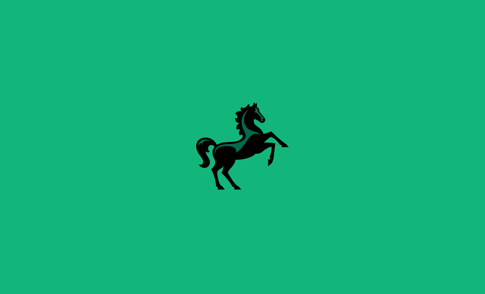
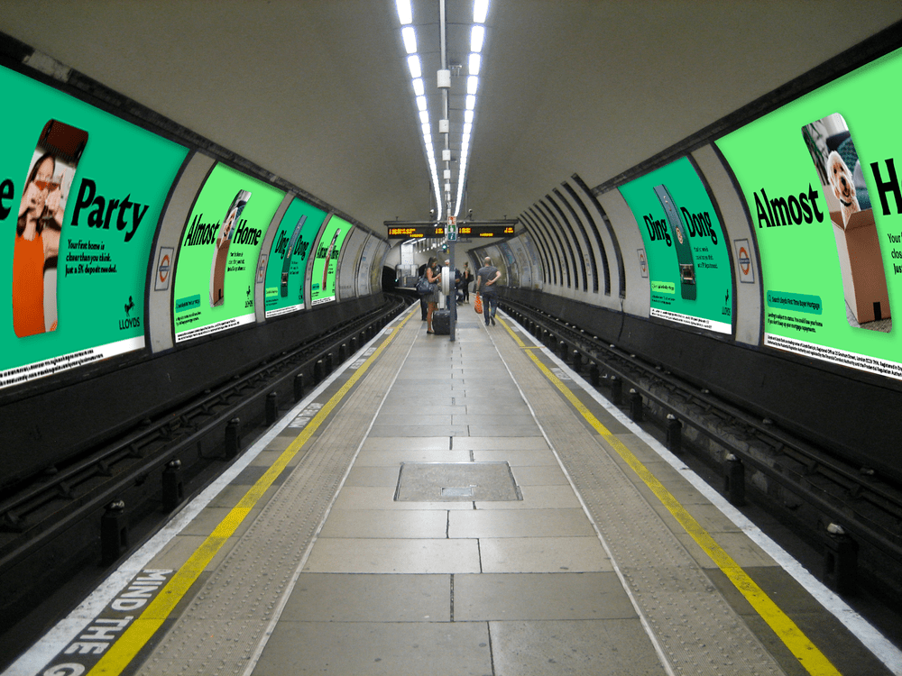
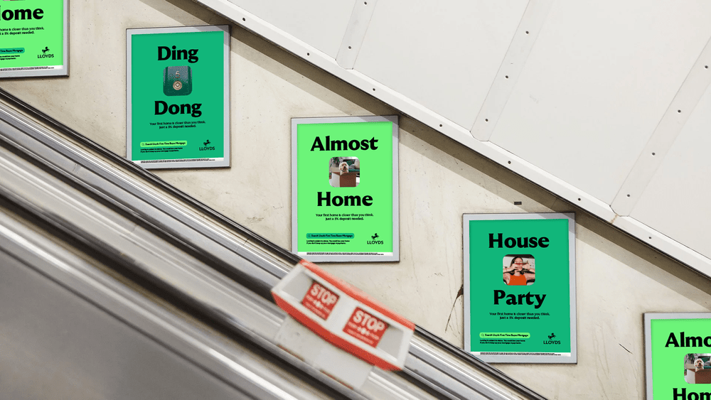
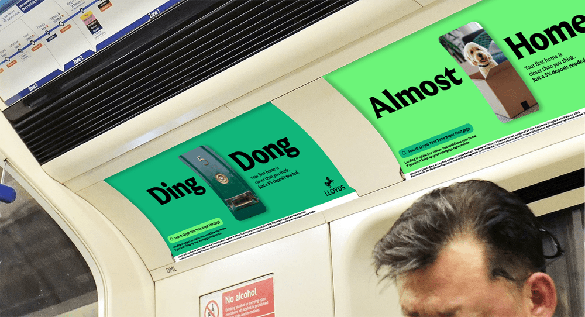
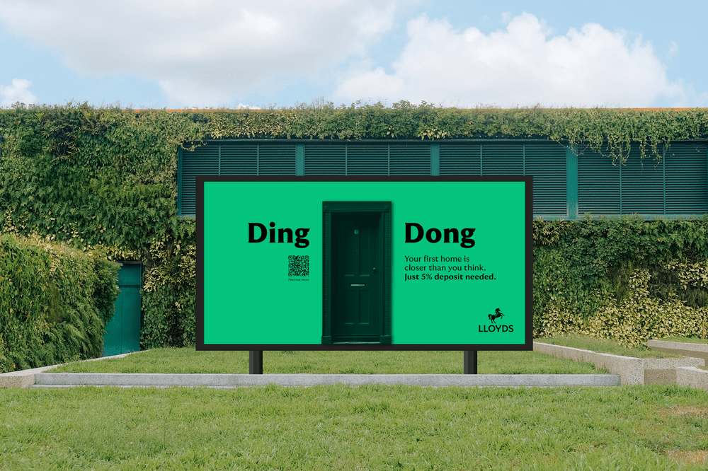
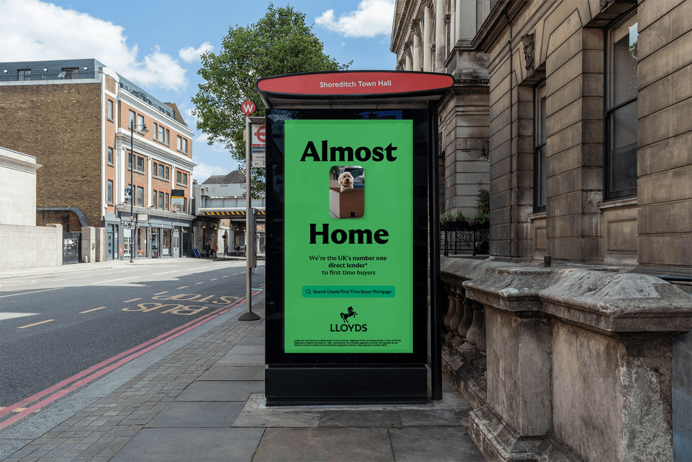
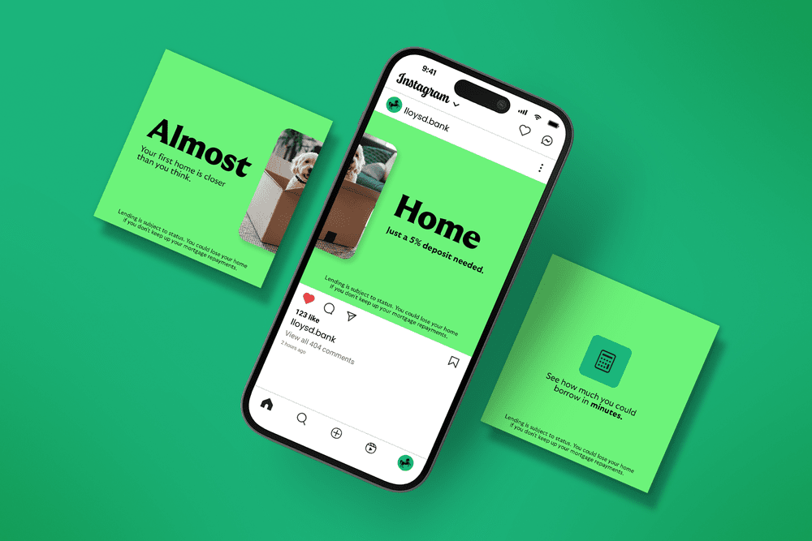
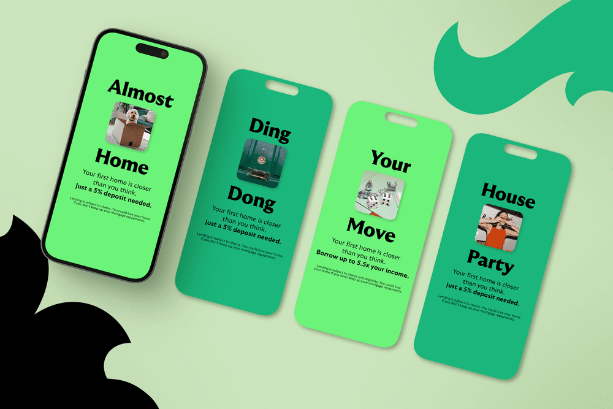

Lloyds
Making home ownership feel within reach. An integrated campaign for Lloyds' 5% deposit mortgage, rolled out across OOH, print and digital with Digitas UK.

Lloyds Bank is one of the UK's leading financial institutions, known for supporting customers through key life moments, including home ownership.
Digitas UK is a global marketing and experience agency focused on creating connected, customer-centric brand experiences across digital and physical touchpoints.
Home ownership, reframed as achievable.
The campaign centred around promoting Lloyds' 5% deposit mortgage, designed to make home ownership feel more accessible for first-time buyers. The core idea focused on reframing the perception that buying a home is out of reach, instead positioning it as something closer and more achievable.
To maximise reach and impact, we developed a fully integrated campaign spanning high-visibility out-of-home placements and digital channels. Large-scale Tube station takeovers, billboards, and national OOH placements were used to capture attention during daily commutes, while digital and social assets reinforced messaging in more personal, scrollable environments.
The creative direction leaned into clarity, optimism, and simplicity, ensuring complex financial information was communicated in a way that felt approachable and easy to understand. Strong, bold layouts combined with Lloyds' distinctive brand assets helped create a consistent and recognisable presence across all touchpoints.
As part of the design team, I contributed to the end-to-end visual rollout of the campaign, designing and adapting assets across both print and digital formats. This included large-format OOH, social media assets, and display creatives, ensuring consistency and quality across a wide range of formats and placements.





Clear and trustworthy, at every scale.
Mortgages can feel complex and intimidating, so the design needed to strike a balance between clarity, trust, and visual impact.
Another challenge was maintaining consistency across a highly varied set of deliverables, from environmental graphics to small digital formats. Each execution required careful adaptation while preserving the core creative idea and adhering to strict brand and regulatory guidelines.

